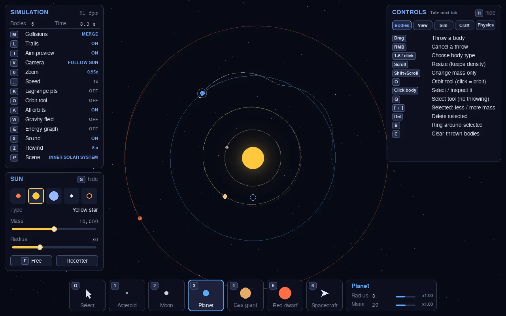
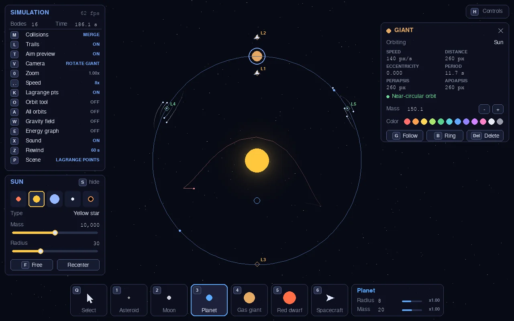
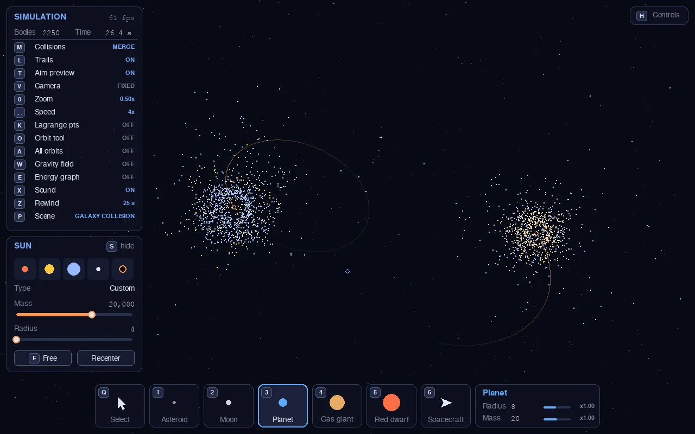
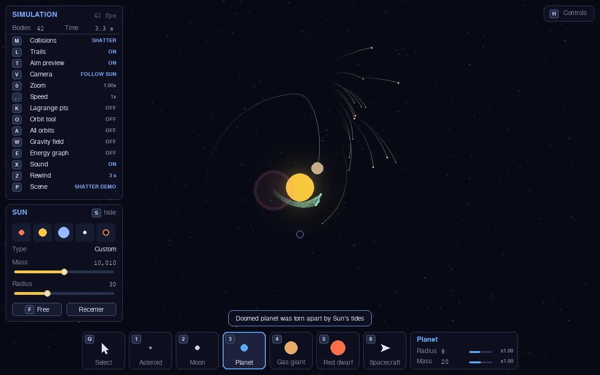
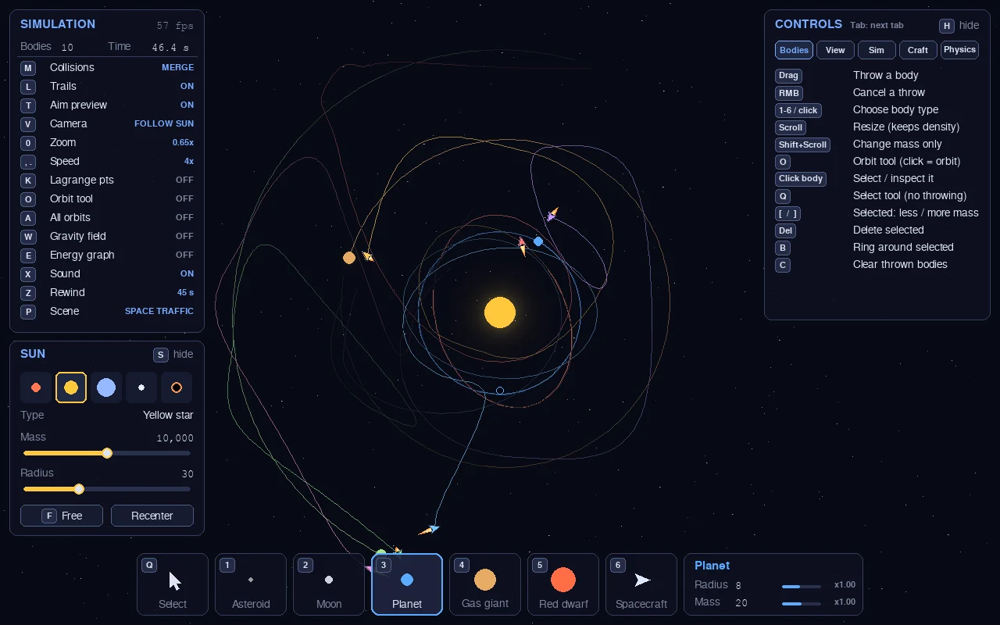
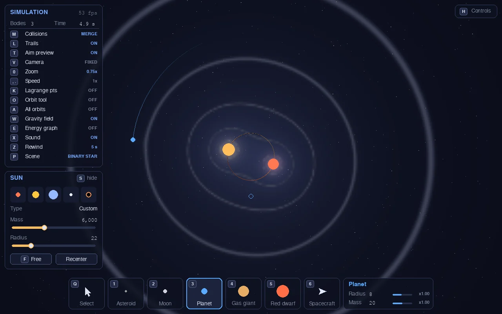

GravSim is a 2D gravity sandbox. Every body pulls on every other one with real inverse-square gravity, so orbits, slingshots, collisions and escapes all come out of the physics.

Click, drag and let go. Everything after that is Newton's law of gravity, run hundreds of times a second.
Every body pulls on every other body. Velocity-Verlet integration keeps orbits stable for a long time, and NumPy handles thousands of particles in real time.
Asteroids, moons, planets, gas giants, red dwarfs and spacecraft. Scroll to resize, and an aim preview shows the path before you let go.
Merge, shatter into debris, or bounce. Stray too close to a star and its tides tear you apart at the Roche limit.
Hold a Lagrange point, make a Hohmann transfer to another planet, rendezvous and enter orbit, or fly by hand with the arrow keys.
Click a body for its period, eccentricity and closest and farthest distance. Show every orbit at once, mark L1–L5, or drop bodies onto perfect circular orbits.
Spin the view with a planet so it stands still. Hidden patterns show up, like asteroids tracing tadpole loops around L4 and L5.
Hold Z to rewind up to 60 seconds. Every run is deterministic, so a scene plays out the same way every time.
Gravity-field heatmap with contour lines, an energy and momentum graph, trails, glow, and synthesized collision sounds.
Live sliders for gravity strength, softening, physics rate, bounciness, shatter energy and more. Save and load scenes to share setups.
All captured straight from the app. Click any image for full size.





On Windows it's a single file: download it and double-click. There's no installer and no Python needed.
Windows 10 or 11, 64-bit.
Download GravSim.exeGravSim.exe.Save it anywhere you like, such as your Desktop or a GravSim folder.saves folder next to the .exe. To uninstall, delete the .exe and that folder.Older versions are on the Releases page.
You need Python 3.9 or newer. It works anywhere pygame and NumPy run.
git clone https://github.com/Shane-Stevens-Git/GravSim.git
cd GravSim
pip install -r requirements.txt
python main.pyNo git? Use Download ZIP, unzip it, and run the last two commands in that folder. On macOS and Linux use pip3 and python3 if python isn't found.
To build your own .exe on Windows, run build_exe.bat. The result appears in dist\GravSim.exe.
The app opens on a sun and one planet. The rest is up to you.
Press 1–6 or click a card at the bottom. Scroll to make it bigger or smaller.
Press where it should start, drag the way it should go, and let go. Drag sideways to the sun for an orbit.
Click any body to see its orbit, change its mass or color, or have the camera follow it with G.
Press P for nine preset scenes, from a binary star to colliding galaxies.
Tip: the on-screen HUD shows the circular-orbit speed where you're aiming. Throw at about that speed for a circle; about 1.4× that speed escapes.
Press P, then a number. R restarts the current scene.
The default: one planet on an elliptical orbit.
Four planets and a moon around Earth.
A planet on a stable orbit around both stars.
Three equal stars sharing one figure-8 path, until it breaks up.
300 asteroids; a giant's 2:1 resonance stirs up the middle.
Stable L4/L5 tadpoles, unstable L1–L3, and probes holding station.
2,300 stars, tidal tails and bridges, and the cores merge.
A head-on planet smash, then the sun's tides shred what falls in.
Six ships touring three planets, steering around everything.
You don't need to memorize these. Everything can also be clicked, and the in-app Controls panel (H, Tab to switch pages) lists them too.
| 1–6 or click a card | Choose body type: Asteroid, Moon, Planet, Gas giant, Red dwarf, Spacecraft |
| Left-drag, release | Throw: press where it starts, drag the way it should go |
| Right-click | Cancel a throw |
| Scroll | Size of the next body (mass scales with it) |
| Shift + scroll | Mass of the next body only (denser or lighter) |
| Click a body | Select it: the inspector shows its orbit and lets you change its mass and color |
| Q | Select tool: clicks only select, never throw; drag to pan |
| O | Orbit tool: a click places a body on a circular orbit (Shift+click for the other direction) |
| [ ] Del | Lower / raise the selected body's mass, delete it |
| B | Add a ring of particles around the selected body |
| C | Clear the bodies you threw |
| V | Camera: follow, then rotate with the selected body, then fixed |
| G | Follow the selected body (again: back to the sun) |
| Ctrl + scroll, + - | Zoom in / out (0 resets) |
| Middle-drag | Pan the view |
| A | Show every body's predicted orbit |
| K | Show Lagrange points L1–L5 |
| L / T | Trails / aim preview |
| W | Gravity field overlay |
| E | Energy & momentum graph |
| H / S / Tab | Show or hide the controls panel / sun panel; next controls page |
| F11 | Fullscreen (the window can also be resized) |
| Space / N | Pause / step one frame |
| , . | Slower / faster (0.25× to 8×) |
| Z (hold) | Rewind, up to 60 seconds back |
| M | Collision mode: merge, shatter or bounce |
| F | Pin / unpin the sun |
| P | Scenes menu |
| R | Reset the scene |
| X | Sound on / off |
| Physics tab | Live sliders: gravity, softening, physics rate, trail length, bounciness, shatter energy, Roche limit, launch strength |
| Esc | Quit |
| Hold | Station-keeping: holds a shown Lagrange point, or a circular orbit at its current distance |
| Transfer | Click a planet: waits for the launch window, makes a Hohmann transfer, then rendezvous |
| Follow | Click a body: rendezvous and keep station beside it, or enter orbit if it's massive enough |
| Manual | Fly with the arrow keys: ↑ thrust, ↓ brake, ← → turn |
| Off | Engine off, just coasting |
| Fuel | Unlimited, but the delta-v spent is shown in the inspector |
| Ctrl+S / Ctrl+O | Save / load a scene file |
| F5 / F9 | Quick save / quick load |
| Where | A saves folder next to the app. Scene files are plain JSON and can be shared |
Yes. GravSim is a hobby project, and the source code is on GitHub.
Windows SmartScreen warns about any app that isn't code-signed with a paid certificate. Click More info, then Run anyway. If you'd rather not, you can read the source and run it with Python, or build the .exe yourself with build_exe.bat.
There's no prebuilt app for those yet, but it runs from source on both. See Install: it's four commands.
Gravity is real Newtonian inverse-square attraction between every pair of bodies, integrated with velocity Verlet. That's the same method many astronomy codes use. Distances and masses are in "screen units" instead of kilometers, so it's to scale with itself but not with the real solar system.
It was thrown faster than escape speed, which is about 1.4× the circular-orbit speed shown in the HUD. Hold Z to rewind and try a gentler throw, or use the Orbit tool (O) for a perfect circle.
Bodies you throw all pull on each other, so the cost grows fast. Particles (belts, rings, galaxy stars) only feel gravity and don't pull back, which is why thousands of them still run smoothly. In the Physics tab you can also lower the physics rate.
No. Everything, including the sounds, is generated on your computer.
Delete GravSim.exe and the saves folder next to it. It doesn't install anything else.
{kind=link}
{kind=link}
{kind=link}
{kind=link}
{kind=link}
{kind=link}